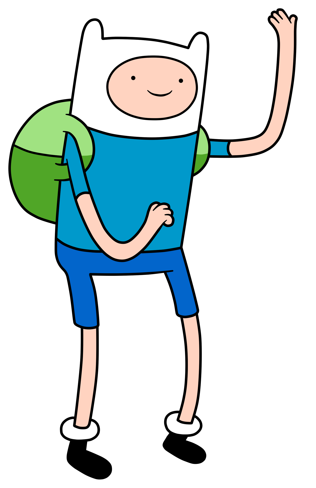
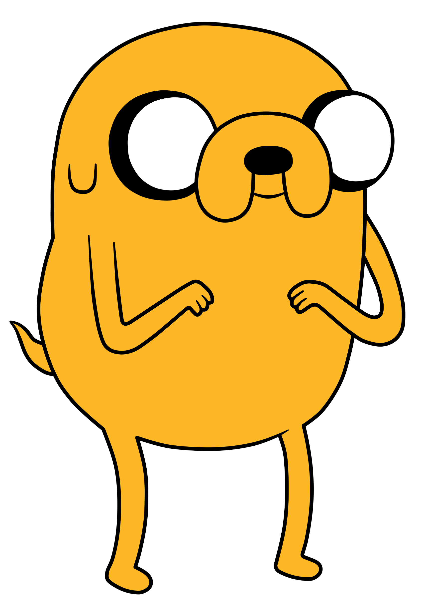
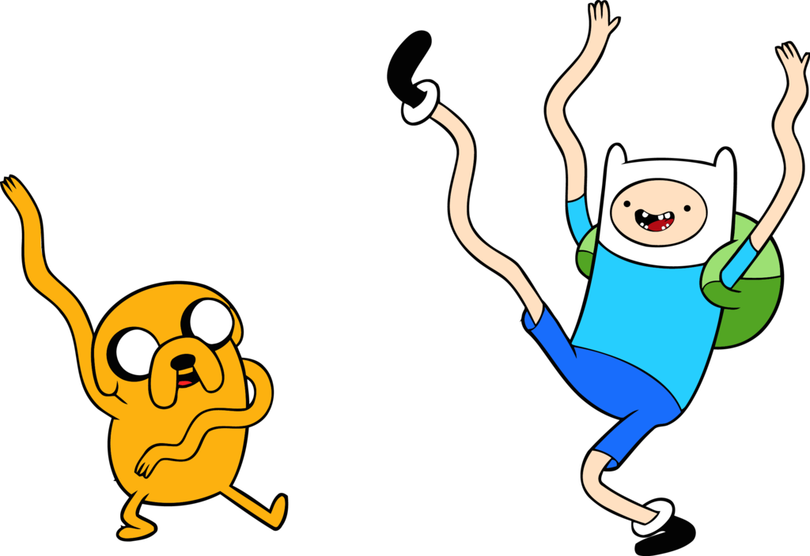

Hora de Aventura
Conoce un poco mas a Jake y Finn
Conoce un poco mas a Jake y Finn
Finn es el protagonista principal de Hora de Aventura y el mejor amigo y hermano adoptivo de Jake. Él es un joven con un gran espíritu aventurero y explorador de la Tierra de Ooo, junto a Jake, sus amigos y conocidos. Él es hijo de Martin Mertens y Minerva Campbell, y nació en las islas, pero tras una serie de hechos termino llegando a la Tierra de Ooo en donde fue adoptado por Joshua y Margaret. Durante mucho tiempo se creyó que Finn era el último humano, pero en ''Islas'' eso se erradicó por completo. Anteriormente estaba enamorado de la Dulce Princesa, pero ella no le correspondió. Luego se hace novio de la Princesa Flama, quien luego rompe con él. Actualmente sale con la Maga Cazadora.
Jake es el co-protagonista de la serie Hora de Aventura y Tierras Lejanas. Él es un perro mágico y compañero constante de Finn que es su mejor amigo y hermano adoptivo. Jake tiene Poderes Elásticos, que le permiten estirar y manipular su cuerpo. Él es el hijo adoptivo de Joshua y Margaret, y que nació de una protuberancia que le creció a Joshua cuando la Criatura Venenosa inyectó un veneno extraño sobre él. Él tiene un hermano llamado Jermaine. Jake es un perro de 34 años con poderes mágicos, aunque no suele actuar con madurez en algunas ocasiones. Tanto él como su novia, Arcoiris, comparten la pasión por tocar la viola o violín. En Jake el Papá, tiene cinco hijos Lluvia-Cornios con ella.
Finn es el protagonista principal de Hora de Aventura y el mejor amigo y hermano adoptivo de Jake. Él es un joven con un gran espíritu aventurero y explorador de la Tierra de Ooo, junto a Jake, sus amigos y conocidos. Él es hijo de Martin Mertens y Minerva Campbell, y nació en las islas, pero tras una serie de hechos termino llegando a la Tierra de Ooo en donde fue adoptado por Joshua y Margaret. Durante mucho tiempo se creyó que Finn era el último humano, pero en ''Islas'' eso se erradicó por completo. Anteriormente estaba enamorado de la Dulce Princesa, pero ella no le correspondió. Luego se hace novio de la Princesa Flama, quien luego rompe con él. Actualmente sale con la Maga Cazadora.
Finn es muy bueno en varias formas de combate, incluyendo el mano a mano (Lucha a puños, patadas, etc), la magia y la lucha con alguna de sus muchas espadas. Él puede saltar muy alto (Esto puede ser un efecto de la falta de gravedad en la Tierra debido al cráter en la misma o por culpa de la mutación de la guerra de los champiñones, ya que otros personajes de la serie no saltan como Finn) y es excepcionalmente fuerte y ágil para un adolescente de 16 años. Finn tiene algunas habilidades de origami, como se muestra en Ricardio Corazón de León y ''El Clóset de Marceline'' en el que hace para la Dulce Princesa una grulla de papel. Finn ha sido visto disfrutando cantar y adquiriendo la capacidad del auto-ajuste de su voz de mando después de comer una pequeño ordenador, según su versión. Él es muy bueno para jugar a un vídeo juego llamado Maestros de Aventura que él y Jake juegan en BMO de vez en cuando. Al parecer Finn puede controlar su mente para no sentir dolor alguno, como se muestra en El Traje de Jake. S5 E45 - O O Finn es un poco dotado para la construcción de máquinas simples, tales como la catapulta en ''El Jardín de la Bruja''. También puede escupir a distancias muy largas y lejanas, como se demuestra en ''¡Desalojo!''. Cuando le escupe a Marceline y en ''Mis Dos Personas Favoritas'' cuando Finn le escupe a Tiffany en la cara. En ''La Gruta'', una de las pruebas de Jake era ganarle a un duende en un concurso de escupir, el cual Finn habría ganado fácilmente. Además, en ''Quién Podría Ganar'', Finn le escupe a Jake durante su pelea. También se lo ha visto tocar una flauta en ''Prisioneros del Amor'', y además tiene una habilidad en el beatboxing, una técnica de crear sonidos con la boca. Otra de las habilidades que se destacan de Finn es su inteligencia en caso de apuros, él es quien ha creado la mayoría de los planes de escape durante los episodios como: Descongelando una Boda, Morituri Te Salutamus, ''De Mal en Peor'''. Finn también a demostrado ser principiante en la música de globo como se muestra en El Clóset de Marceline y aún no lo domina. Finn ha demostrado en varias ocasiones ser resistente al control mental por parte del Lich en ''Amor Loco'', ''El Lich'' y ''Escape en la Ciudadela'', y a Goliad en el capitulo del mismo nombre, aún se desconoce el motivo real por el cual es.
Poderes Elásticos Eeep 4 Jake tiene unos poderes elásticos que le permiten modificar el tamaño, la forma y las dimensiones de cada parte de su cuerpo. No sólo se puede estirar y retorcer a sí mismo en formas muy específicas, sino que también puede reorganizar sus órganos internos y los dientes. En ¡Desalojo! fue capaz de reducirse de tamaño y mover sus órganos internos y la sangre a su dedo pulgar izquierdo. También en Jake Contra Mi-Miau, amplió su hígado al tamaño de un perro 51 veces su tamaño, que le impidió morir por el Veneno de Mi-Miau. Un uso frecuente de sus poderes es la Mano Llave, que se utiliza para abrir cerraduras. Como se muestra en El Tren Misterioso, también es capaz de estirarse para crear completamente una nueva persona, siempre y cuando se mantengan conectados a él. Sentido del Olfato Yyss 32 También tiene un agudo sentido del olfato, ya que aparentemente puede oler la ubicación precisa de un objeto a una milla de distancia. Es dueño de una espada, un escudo y un hacha, pero rara vez los usa en combate. En El Tren Misterioso, cuando se disfrazó como el conductor, estuvo usando brevemente una espada de madera para luchar contra Finn, que sin esfuerzo lo derrota. Esto demuestra que Jake no es competente en la esgrima, al menos en relación con Finn, pero que podría haber sido sólo parte de su fiesta de cumpleaños, posiblemente haciéndolo mejor en manejo de la espada. Es entonces cuando también muestra una destreza para el skate, ya que realiza saltos varias veces sobre un tren en movimiento.